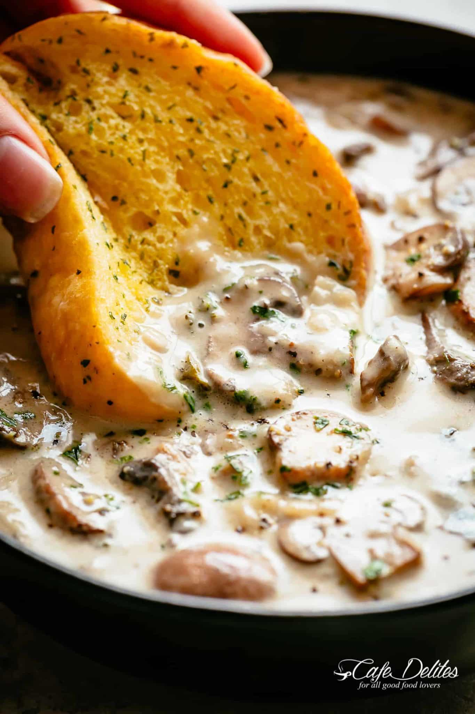

MUSHROOM SOUP
MUSHROOM SOUP

Cooking time
30 minutes
Total time
1 hour
INGREDIENTS
- 4 tablespoons butter
- 1 tablespoon oil
- 2 onions diced
- 4 cloves garlic minced
- 1 1/2 pounds (750 g) fresh brown mushrooms sliced
- 4 teaspoons chopped thyme divided
- 1/2 cup Marsala wine (any dry red or white wine)
- 6 tablespoons all-purpose flou
- 4 cups low sodium chicken broth or stock
- 1-2 teaspoons salt adjust to taste
- 1/2-1 teaspoons black cracked pepper adjust to taste
- 2 beef bouillon cubes, crumbled
- 1 cup heavy cream or half and half (sub with evaporated milk)
- Chopped fresh parsley and thyme to serve
DIRECTIONS
- Heat butter and oil in a large pot over medium-high heat until melted. Sauté onion for 2 to 3 minutes until softened. Cook garlic until fragrant, about 1 minute.
- Add mushrooms and 2 teaspoons thyme, cook for 5 minutes. Pour in wine and allow to cook for 3 minutes.
- Sprinkle mushrooms with flour, mix well and cook for 2 minutes. Add stock, mix again and bring to a boil. Reduce heat to low-medium heat, season with salt, pepper and crumbled bouillon cubes.
- Cover and allow to simmer for 10-15 minutes, while occasionally stirring, until thickened.
- Reduce heat to low, stir in cream or half and half. Allow to gently simmer (do not boil). Adjust salt and pepper to your taste.
- Mix in parsley and remaining thyme. Serve warm.
Nutrition facts
Per Serving: Calories: 271kcal | Carbohydrates: 21g | Protein: 8g | Fat: 13g | Saturated Fat: 7g | Cholesterol: 35mg | Sodium: 583mg | Potassium: 699mg | Fiber: 1g | Sugar: 5g | Vitamin A: 550IU | Vitamin C: 7.6mg | Calcium: 91mg | Iron: 1.6mg